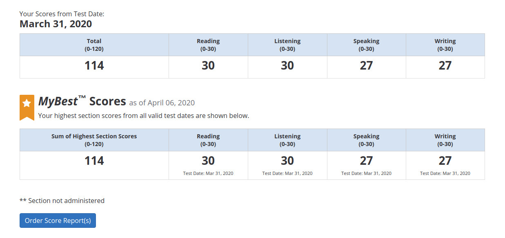

2020.4.8 托福iBT出分了
2020-04-08
2020年3月Covid-19期间我在美国考托福的生活
之前3月1日预约的28日周六的考试，由于美国疫情的迅速发展，在3月26日周四收到考试被延期的邮件。在一阵混乱之后ETS发布了在家考iBT的选项，于是周五火速预约了最早的在家考试。在W530上尝试了用VBox安装考试客户端后发现不行，官方要求必须要用Windows主机。无奈中把W530的Linux硬盘换下，随后用Lenovo赠送的恢复光盘装上了Win7，总算建设好了考试环境。
31日周二，向公司方面宣称在家工作work from home，早上起来以后吃完早饭8:40准时进入了考试客户端。工作人员会远程操作你的桌面，并指示你出示ID，用摄像头显示桌上与房间没有可疑物品，另外考试不能使用普通的纸做笔记，用透明的文件套住白纸做笔记后再考试后擦除才可以。
9：00左右确认的手续全部完成，正式开始考试。
Reading
第一篇是关于北极的一种用雪建造的居住房屋，第二篇关于树叶的各种形状和气候的关系（比如气候炎热需要减少蒸发面积，因此叶片不能很大），最后一篇是关于几千年以前美国土著民如何从游牧逐渐转向农耕生活的转变。3篇共30个问题，时间是54分钟，我大约50分钟就完成了，感觉文章相比以前容易一些，另外问题都是局部问题，基本只要反复读很小的一段上下文就可以做题。
Listening
分成3个section，每个包括一个campus对话和一个lecture，最后一个section有两个lecture。内容比较多就不回忆了，总体也感觉比以前容易（是自己在美国听力提高了？不会吧。。）
Speaking
第一题，问你是否赞成小学生使用计算器做数学。第二题，说是学校决定强制减少学生在校打工的时间，原因是希望学生集中精力学习，另外通过限制时间创造更多就业机会。对话中的男生认为学生会反而去校外打工，因此不会有利于学习；校内的打工机会也已经足够多，从没听说过有找不到岗位的，因此没什么必要。
第三问，文章是关于perceived value pricing，就是说通过建设品牌形象，可以提高商品定价。讲座中教授讲述一家运动商品公司，通过签约有名运动员，成功高价贩卖运动鞋的故事。
第四问，关于如何减少人类对环境危害的方法。第一种是改变建筑物的地点，不要去占用野生动物的栖息地，第二种是与地域共生，不要砍伐树木而把树木作为一种装饰。
Writing
综合题是关于土星的ring的形成原因，一是卫星的撞击，二是太阳形成的碎片，三是小行星撞击。讲座中教授不同意并叙述了原因。
自由题是问你Young people are more likely to help others than before，这尼玛算是个什么辩题。。。说实话当时有点空白，不过还是吹牛勉强混了过去。
综合下来，口语的发挥说实话不是很理想，234问都有遗漏一些细节，个别单词也有点词不达意的感觉；不过答题的套路模板基本是练习好了，因此没有太大问题。
考完已经12点多，当场就给了一个Unofficial的Reading和Listening成绩，都是30分满分，还是蛮高兴的。口语和作文就等下周公布成绩了。。不知道能不能突破上次108分的记录呢。。。
Score

今天2020.4.8日周三，今明天选择在家work from home。起来以后就发现收到ETS邮件，心情比较平静，毕竟大概心里有底。查分发现这次得分114，比上次又进了一步还是很高兴的。
主要是口语的给分还是高于了我的预想，之前做模考的时候自动评分都只给23，有点担心。实际考试的时候感觉自己的细节也没有表达很到位，不过看来老师还是很仁慈的，这一点并不是日本考区才有的情况，善哉。。